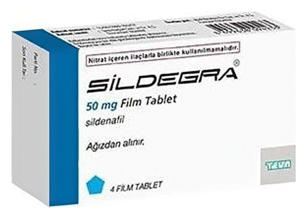

Sildegra 50 mg Film Kaplı Tablet, 4 Adet

Ne için kullanılır
KT · Bölüm 1• SİLDEGRA®film kaplı tabletler 50 mg sildenafil içeren, mavi renkte, kokusuz, beşgen, bir tarafında “SLD 50” baskılı film kaplı tablet olarak, 4 tablet içeren ambalajlar halinde sunulmaktadır.
• SİLDEGRA®fosfodiesteraz tip 5 (PDE5) inhibitörleri adı verilen bir ilaç grubuna dahildir. Penisteki kan damarlarının gevşemesine yardımcı olarak cinsel uyarı sırasında kanın penise akımını sağlamak suretiyle etki gösterir.
• SİLDEGRA®sadece cinsel yoldan uyarılmanız durumunda doğal yolla sertleşme (ereksiyon) oluşmasına yardım eder. Sertleşme sorununuz yoksa SİLDEGRA®kullanmamalısınız. Sertleşme sorunu, bir erkekte cinsel aktivite için gerekli, penis sertleşmesinin sağlanamaması veya sertliğin korunamamasıdır. SİLDEGRA®kadınların kullanımı için değildir.